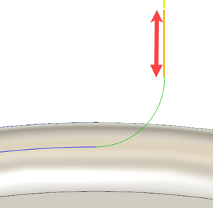

<div id="rotary_finishing_leadInExtension"><p>Specifica la lunghezza per il movimento di estensione in entrata.</p>
<table class="tipTable" cellspacing="10">
<tr>
<td><center></center></td>
</tr><tr>
<td><center><p><b>Estensione in entrata</b></p></center></td>
</tr></table>
</div>